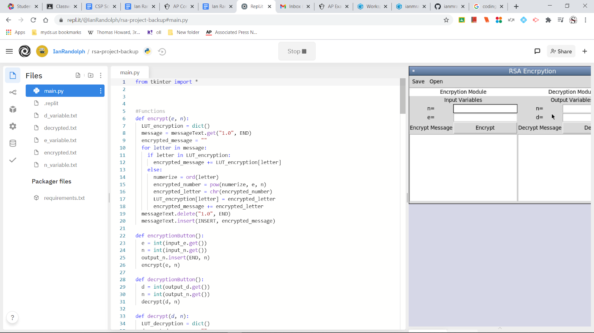

The program uses user provided encryption and decryption keys to encrypt and decrypt coded messages.
The program is shown using a user-provided encryption key to encrypt a message, using a decryption key to decrypt a message, and saving/loading messages from/into the encryption and decryption modules.
The encryption module takes an e and an n variable as well as a uncoded message as input. The encryption module outputs that same message encrypted. The decryption module takes an n and d variable input as well as an encrypted message as input. The decryption module outputs that same message decrypted.
The user types an encryption key’s e and n variables into 2 entry boxes on screen and types a message into a text box. When they click the ‘Encrypt’ button, the e and n variables are called into a function that encrypts their message and prints their newly encrypted message into the text box. This is one of the most integral procedures of the entire program, as it encompasses the functionality of the encryption module.
The first function ‘encryptionButton()’ defines the variables ‘n’ and ‘e’ as whatever integers the user has typed into two textboxes on-screen. The function then calls those variables into the second function, ‘encrypt()’. ‘encryptionButton()’ will run when the user pushes a button on-screen.
The second function, ‘encrypt()’, will decrypt a string message the user has typed into another textbox. It first creates a dictionary by defining the ‘dict()’ function as the variable ‘LUT_encryption’, so that any repeat letters can be more efficiently encrypted. The function defines the variable ‘message’ as the string the user has typed into a designated text box on-screen. Another variable, ‘encrypted_message’ will represent the finished product, and is initially defined as an empty string. A ‘for’ loop is then used to decrypt the user’s message letter-by-letter. Within the for loop is an if/else statement, saying that if any letter in the message repeats (that is to say, is in the dictionary we created), the encrypted letter should be pulled directly from the dictionary and concatenated into the ‘encrypted_message’ variable. The ‘else’ statement, for if the letter is not in the dictionary, numerizes each letter in the message with the ‘ord()’ function and defines the numerized letter as the variable ‘numerize’. ‘numerize’ is then encrypted with the ‘pow()’ function as well as the ‘e’ and ‘n’ variables and defined as ‘encrypted_number’. ‘encrypted_number’ is then converted into a character on the ASCII table with the ‘chr()’ function, and defined as ‘encrypted_letter’. The variable ‘encrypted_letter’ is then concatenated into ‘encrypted_message’. Once there are no characters left in the users initial message, their unencrypted message is deleted from the text box and ‘encrypted_message’ is printed there in its place.